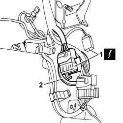
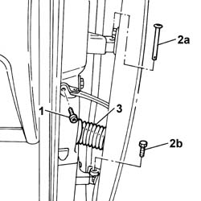
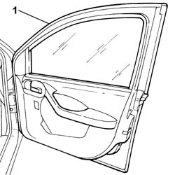

7210E36 R.R. FRONT SIDE DOOR
- Path
- Procedures > 72 PANELS AND FRAME > 7210 REMOVING REFITTING > 7210E EXTERNAL PARTS > 7210E36 R.R. FRONT SIDE DOOR
- Kind
- repair procedure (removal / refitting; the operation number is the code)
- Applies to
- all engines; all production periods
- Interactive page
- https://sloeber94.github.io/elrnDB-fPnd/en/#/2753359
Applies to: all engines; all production periods
 Removing
Removing
 Refitting
RefittingDisconnect the battery negative terminal.
7040L42 sill plate connection of one front door (1), lh or rh - r r .
1. Disconnect the electrical connections.
 | Name | Connector |
|---|---|---|
1 | Front left door connection | D30A |
| Name | Connector |
|---|---|---|
1 | Front left door connection | D30B |
| Name | Connector |
|---|---|---|
1 | Front right door connection | D31A |
| Name | Connector |
|---|---|---|
1 | Front right door connection | D31B |
2. Remove the guard and release the electrical connections.

Applies to: all engines; all production periods
1. Undo the bolt fixing the door check strap.
2. Undo the bolts (2a) and (2b) fixing the hinges.
3. Release the cable duct and release the door wiring.

Applies to: all engines; all production periods
1. Lift up the door and remove it.

Applies to: all engines; all production periods
Refitting
RemovingCheck that the front door is not damaged.
If necessary touch up the paintwork.
Position the front door on the hinges.
Tighten the bolts fixing the hinges to the recommended torque.
 | Fastening | Component | Ø | Value (daNm) |
|---|---|---|---|---|
- | Bolt | SIDE DOORS | M6 | 1.5 |
Tighten the bolt fixing the door check strap to the recommended torque.
| Fastening | Component | Ø | Value (daNm) |
|---|---|---|---|---|
- | Bolt | FRONT DOOR OPENING LIMITER | M8 | (Bodyshell side) 2.5 |
Position the wiring inside the housing in the bodyshell and position the cable duct.
Position the guard and connect the electrical connections.
| Name | Connector |
|---|---|---|
- | Front left door connection | D30A |
| Name | Connector |
|---|---|---|
- | Front left door connection | D30B |
| Name | Connector |
|---|---|---|
- | Front right door connection | D31A |
| Name | Connector |
|---|---|---|
- | Front right door connection | D31B |
7040L42 sill plate connection of one front door (1), lh or rh - r r
Check the alignment of the front door and, if necessary, carry out the following procedure:
Connect the battery negative terminal.
Topics linked from this page (2)
- 7005A14 front side door - adjust centering and moulding - includes adaptation of hinges and seals on door compartment
- 7040L42 sill plate connection of one front door (1), lh or rh - r r
Topics that link to this page (19)
- 5010D17 mixed air upper sensor - r r
- 5020A10 heater box - r+r
- 5020A30 heater fan motor - r+r
- 5020A44 heater fan motor resistor - r+r
- 5020A50 heater radiator - r+r
- 5040B64 sensor on evaporator for a/c ecu - r + r
- 5040C10 air conditioner box - r+r
- 5040C26 evaporator unit condensate collection tank - r r
- 5040C30 fan motor - r+r
- 5040C50 air conditioner heater radiator - r+r
- 5040C64 a/c evaporator - r+r
- 5040D14 ecu with automatic air conditioner pushbuttons - r+r
- 5040D75 Air conditioning recirculation flap control MOTOR - R.R.
- 5505A90 rear wiring bundle - r r or replace
- 5505C26 bonnet wiring - r r
- 7005A24 front side door r r
- 7040A97 facia trim support beam - r r
- 7040A98 instrument facia trim support beam - r r with facia removed
- 7040L10 cabin floor carpet - r r